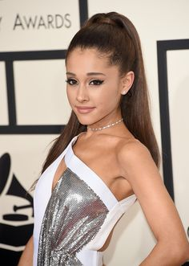
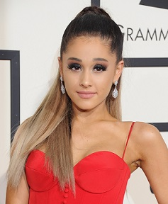

|
Al año siguiente, cantó «Just a Little Bit of Your Heart»
en los Grammy Awards de 2015, donde obtuvo dos nominaciones.Poco después, rindió homenaje a Stevie Wonder en un concierto especial organizado por los Grammy, que sirvió para honrar la carrera como cantante de Wonder. Y al poco tiempo,
se confirmó que Grande forma parte del elenco principal de la nueva serie de terror y comedia de Fox, Scream Queens. Asimismo, anunció el lanzamiento de su propia fragancia llamada Ari, en su cuenta de twitter. El 20 de mayo de 2016,
Grande sacó al mercado su tercer disco, llamado «Dangerous Woman»
. Todo y no tener una gran promoción detrás, destacaron canciones como «Be Alright», «Into You»
y «Dangerous Woman»
que da nombre al álbum y debutó en el número 1 de Bilboard.
|

|
|

|
El álbum recibió críticas generalmente positivas de los críticos y ha logrado un gran éxito ya que fue número 1 en más de 60 países en iTunes.
Grande ha promovido el disco varias veces en la televisión. Ella fue artista invitado en
Saturday Night Live. También cantó un popurrí de "Dangerous Woman" e "Into You" en los Premios
Billboard Music Awards, actuó en los
2016 MTV Video Music Awards, en los
American Music Awards y en numerosos shows televisivos como el
Show de Ellen. Grande se embarcará en una gira de conciertos mundial bajo el nombre de
Dangerous Woman Tour como presentación del álbum en 2017.
Al finalizar el 2016 se registraron más de 1.800.000 ventas de éste disco en modo físico.
Este álbum contó con dos nominaciones a los
Premios Grammy (2017)Premios Grammy (2017), una de ellas en la categoría Mejor Álbum Vocal Pop junto con
Sia, Adele, Justin Bieber y
Demi Lovato.
Pero por desgracia no consiguió llevarse ningún galardón a casa ésa misma noche, perdiendo simultáneamente contra
Adele.
|